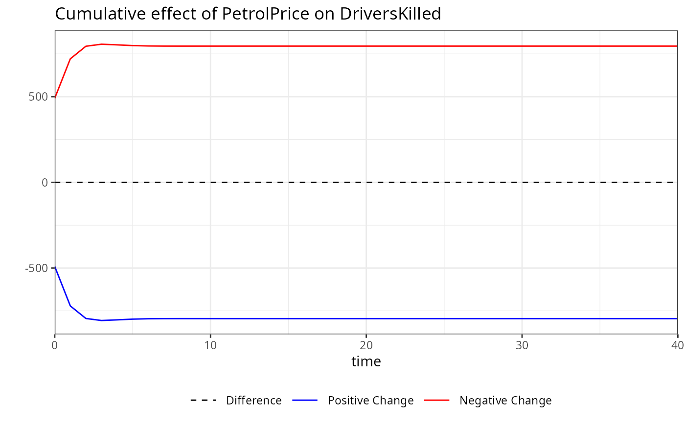
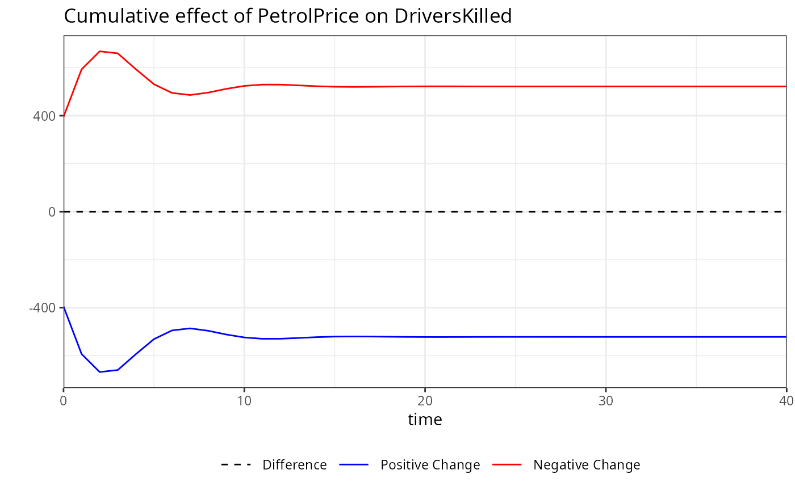
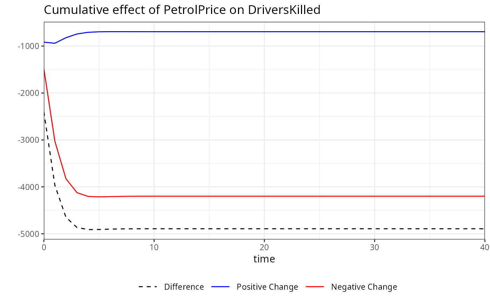
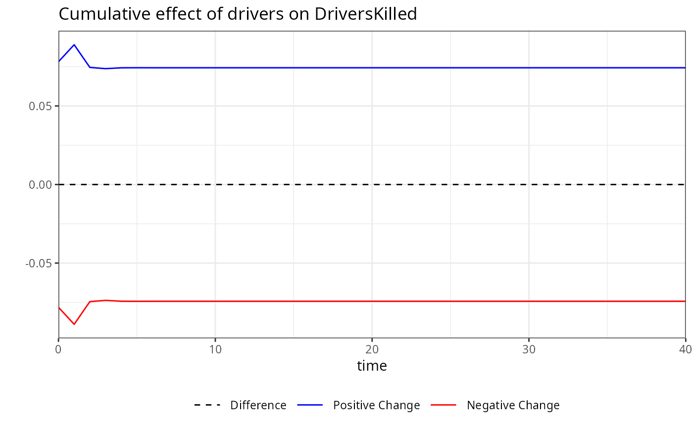
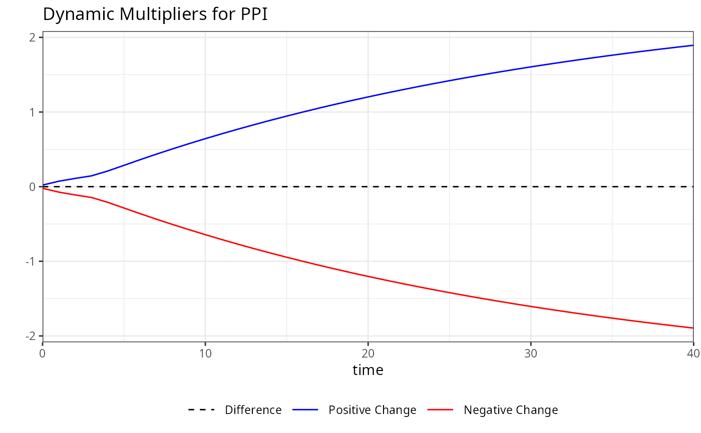

Compute Dynamic Multipliers for kardl Models
mplier.RdComputes cumulative dynamic multipliers based on a model estimated using the
kardl framework. The function supports different configurations of
linearity and asymmetry in both short-run and long-run dynamics.
Value
A list of class kardl_mplier containing:
mpsi: Matrix of cumulative dynamic multipliers.
omega: Vector of omega coefficients (persistence structure).
lambda: Matrix of short-run dynamic coefficients.
horizon: Forecast horizon used.
vars: Extracted model variable structure.
Details
The asymmetry structure is determined internally:
Variables in
extractedInfo$ASvarsare treated as asymmetric in the short run.Variables in
extractedInfo$ALvarsare treated as asymmetric in the long run.
This allows four possible configurations:
LL: Linear in both short-run and long-run
NN: Asymmetric in both short-run and long-run
SA: Short-run linear, long-run asymmetric
AS: Short-run asymmetric, long-run linear
When a component is linear, the same coefficient path is used for both positive and negative changes. When asymmetric, separate positive and negative effects are computed.
The mplier function computes dynamic multipliers based on the coefficients and lag structure of a model estimated using the kardl package. The function extracts necessary
information from the model, such as coefficients, lag structure, and variable names, to compute the dynamic multipliers. It calculates the short-run coefficients, Lambda values, and omega values based on the model's parameters and lag structure. The output includes a matrix of dynamic multipliers (mpsi), which can be used for further analysis or visualization.
The dynamic multipliers provide insight into how changes in the independent variables affect the dependent variable over time, allowing for a deeper understanding of the relationships captured by the model. The function also allows users to set a minimum p-value threshold for including coefficients in the calculation, providing flexibility in focusing on statistically significant effects.
The function constructs dynamic multipliers based on the recursive relationship:
$$ \psi_{h}^{+} = \sum_{i=0}^{h} \frac{\partial y_{t+i}}{\partial x_{t}^{+}}, \quad \psi_{h}^{-} = \sum_{i=0}^{h} \frac{\partial y_{t+i}}{\partial x_{t}^{-}} $$
where \(\psi_h^{+}\) and \(\psi_h^{-}\) represent cumulative responses to positive and negative shocks.
The recursion is defined as:
$$ \psi_h = \lambda_h + \sum_{j=1}^{p} \omega_j \psi_{h-j} $$
where \(\lambda_h\) captures short-run effects and \(\omega_j\) reflects persistence through lagged dependent variables.
When asymmetry is present, positive and negative shocks are propagated separately. Otherwise, the same dynamic path is used.
Examples
# This example demonstrates how to use the mplier function to calculate dynamic multipliers
# from a model estimated using the kardl package. The example includes fitting a model with
# the kardl function, calculating the multipliers, and visualizing the results using both
# base R plotting and ggplot2.
# Calculating dynamic multipliers for a linear model in short and long run (NN)
kardl_model<-kardl(imf_example_data, CPI~ER )
m<-mplier(kardl_model,40)
head(m$mpsi)
#> h NAER_POS NAER_NEG ER_dif
#> [1,] 0 0.1011301 -0.1011301 0
#> [2,] 1 0.2430853 -0.2430853 0
#> [3,] 2 0.3149552 -0.3149552 0
#> [4,] 3 0.3564520 -0.3564520 0
#> [5,] 4 0.3891548 -0.3891548 0
#> [6,] 5 0.4154632 -0.4154632 0
plot(m)

# Calculating dynamic multipliers for a model with
# Short-run linear, long-run asymmetric (SA)
kardl_model<-kardl(imf_example_data, CPI~lasym(ER) )
m<-mplier(kardl_model,40)
head(m$mpsi)
#> h NAER_POS NAER_NEG ER_dif
#> [1,] 0 0.1016347 -0.1016347 0
#> [2,] 1 0.2438260 -0.2438260 0
#> [3,] 2 0.3149033 -0.3149033 0
#> [4,] 3 0.3546481 -0.3546481 0
#> [5,] 4 0.3853433 -0.3853433 0
#> [6,] 5 0.4103829 -0.4103829 0
plot(m)

# Calculating dynamic multipliers for a model with
# Short-run asymmetric, long-run linear (AS)
kardl_model<-kardl(imf_example_data, CPI~sasym(ER) )
m<-mplier(kardl_model,40)
head(m$mpsi)
#> h NAER_POS NAER_NEG ER_dif
#> [1,] 0 0.1168062 -0.02760744 0.08919873
#> [2,] 1 0.2613810 -0.04554608 0.21583495
#> [3,] 2 0.3275027 -0.04989274 0.27760999
#> [4,] 3 0.3633209 -0.03618489 0.32713603
#> [5,] 4 0.3930679 -0.05739910 0.33566883
#> [6,] 5 0.4172614 -0.01462712 0.40263432
plot(m)

# Calculating dynamic multipliers for a model with
# asymmetric effects in both short and long run (NN)
kardl_model<-kardl(imf_example_data, CPI~asym(ER) )
m<-mplier(kardl_model,40)
head(m$mpsi)
#> h NAER_POS NAER_NEG ER_dif
#> [1,] 0 0.1148948 -0.03765414 0.07724068
#> [2,] 1 0.2574646 -0.13534259 0.12212202
#> [3,] 2 0.3218792 -0.24609073 0.07578847
#> [4,] 3 0.3553747 -0.34526280 0.01011187
#> [5,] 4 0.3828353 -0.48437435 -0.10153903
#> [6,] 5 0.4058231 -0.55248000 -0.14665691
plot(m)

# The mpsi matrix contains the cumulative dynamic multipliers for each variable and time horizon.
# The omega vector contains the persistence structure of the model,
# while the lambda matrix contains the short-run dynamic coefficients.
# You can inspect these components to understand the dynamics captured by the model.
kardl_model<-kardl(imf_example_data, CPI~PPI+asym(ER) )
m<-mplier(kardl_model,40)
head(m$mpsi)
#> h NAPPI_POS NAPPI_NEG PPI_dif NAER_POS NAER_NEG ER_dif
#> [1,] 0 0.02132813 -0.02132813 0 0.1063165 -0.03176480 0.07455172
#> [2,] 1 0.07315202 -0.07315202 0 0.2435925 -0.08346931 0.16012314
#> [3,] 2 0.11052625 -0.11052625 0 0.3036652 -0.13943921 0.16422600
#> [4,] 3 0.14464258 -0.14464258 0 0.3292762 -0.19429402 0.13498218
#> [5,] 4 0.20964369 -0.20964369 0 0.3467835 -0.24716862 0.09961483
#> [6,] 5 0.28576074 -0.28576074 0 0.3634339 -0.29819112 0.06524275
head(m$omega)
#> [1] 1.37561845 -0.47712514 0.07968277
head(m$lambda)
#> NAPPI_POS NAPPI_NEG NAER_POS NAER_NEG
#> [1,] 0.021328127 0.021328127 0.106316519 0.031764799
#> [2,] 0.022484531 0.022484531 -0.008975032 0.008008269
#> [3,] -0.023739497 -0.023739497 -0.078040265 0.000000000
#> [4,] 0.005730656 0.005730656 0.000000000 0.000000000
#> [5,] 0.031772768 0.031772768 0.000000000 0.000000000
#> [6,] 0.000000000 0.000000000 0.000000000 0.000000000
# For plotting specific variables, you can specify them in the plot function. For example,
# to plot the multipliers for the variable "PPI":
plot(m, variable = "PPI")
